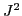

The structures of nuclei can be analyzed by computing the eigenvalues and
eigenvectors of a Hamiltonian matrix  constructed by what is known in
quantum mechanics as the configuration interaction (CI) technique.In most
cases, we are interested in the lowest few eigenvalues of
constructed by what is known in
quantum mechanics as the configuration interaction (CI) technique.In most
cases, we are interested in the lowest few eigenvalues of  . In some
applications, we may be interested in a relatively large number of low
energy states (eigenvalues) with a prescribed total angular momentum,
. In some
applications, we may be interested in a relatively large number of low
energy states (eigenvalues) with a prescribed total angular momentum,
 . This type of calculation, which we will refer to as a total-J
calculation, is particularly useful for investigating, among others,
nuclear level densities as a function of
. This type of calculation, which we will refer to as a total-J
calculation, is particularly useful for investigating, among others,
nuclear level densities as a function of  and excitation energy and
for evaluating scattering amplitudes as a function of channel
and excitation energy and
for evaluating scattering amplitudes as a function of channel  . To
achieve this goal, we perform a simultaneous diagonalization of
. To
achieve this goal, we perform a simultaneous diagonalization of  and
and

, where is the total angular momentum square operator.The Hamiltonian and the angular momentum matrices constructed from the configuration interaction approximation are sparse. However, their dimensions can be extremely large. Therefore, the matrix eigenvalue problem must be solved by iterative methods.
In this talk, we discuss how to efficiently solve this type of eigenvalue problem on multi-core machines with tens of thousands of processing units. In particular, we will examine efficient strategies for distributing matrices to achieve good load balance, the communication overhead associated with orthogonalization and efficient ways to perform sparse matrix vector multiplications.
In addition to discussing these issues in the context of the Lanczos algorithm which is currently used in several nuclear CI codes, we will also examine how we may benefit from the use of a block iterative solver such as a polynomial accelerated subspace iteration or the locally optimal block conjugate gradient (LOBPCG) method, especially when the Hamiltonian is so large that it cannot be completely stored in the main memory.